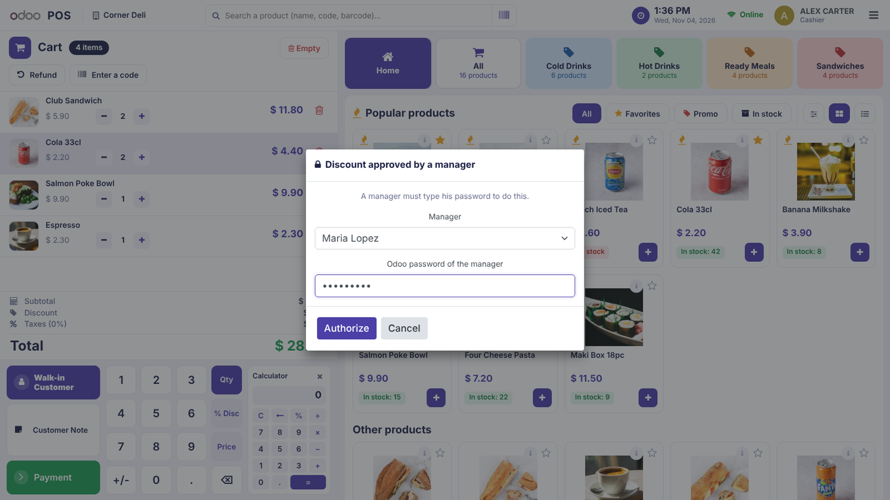
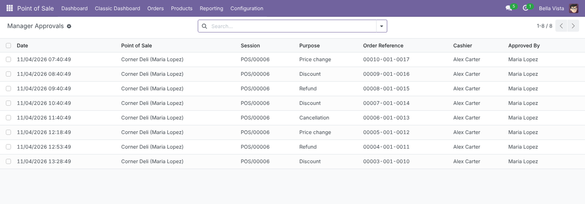
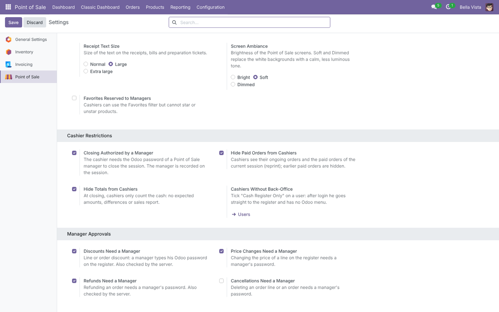

A cashier needs a Point of Sale manager to type his Odoo password to give a discount, change a price, refund, or cancel. Each option is set per Point of Sale, and every approval is kept in a log. Requires GARESE POS.


Point of Sale › Configuration › Settings › Manager Approvals: one switch per control and per Point of Sale.

Odoo 17.0 Community and Enterprise. Works with GARESE POS, pos_hr, pos_loyalty and pos_discount. English and French included.
GARESE – Odoo integration – Libreville, Gabon